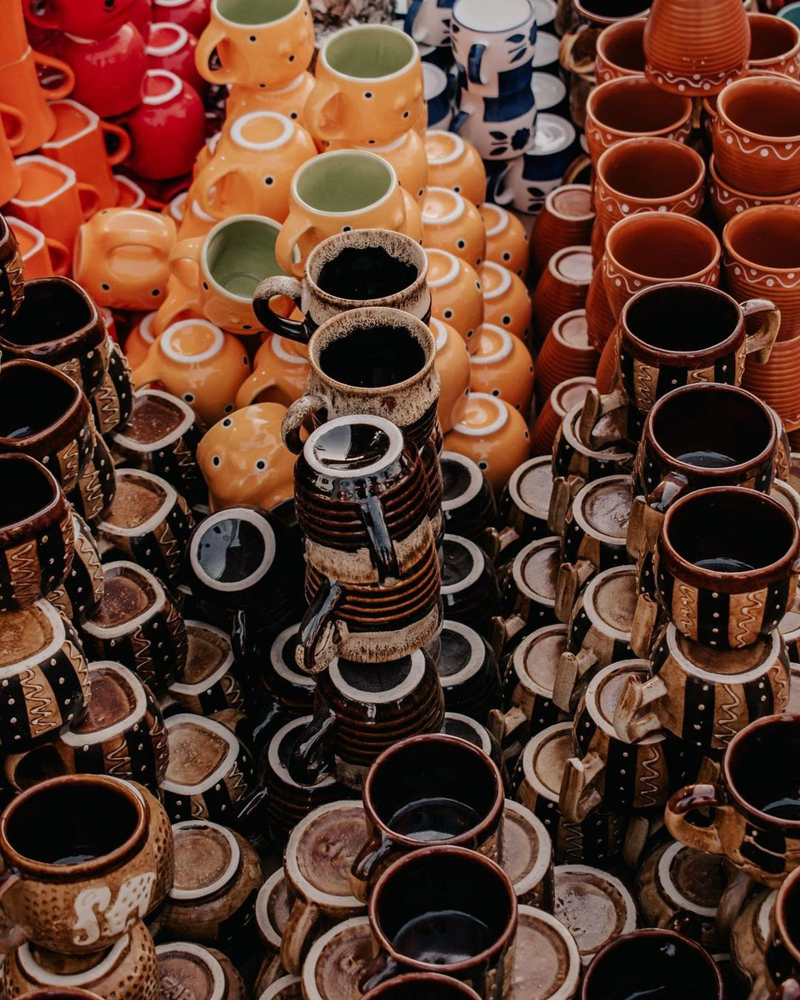
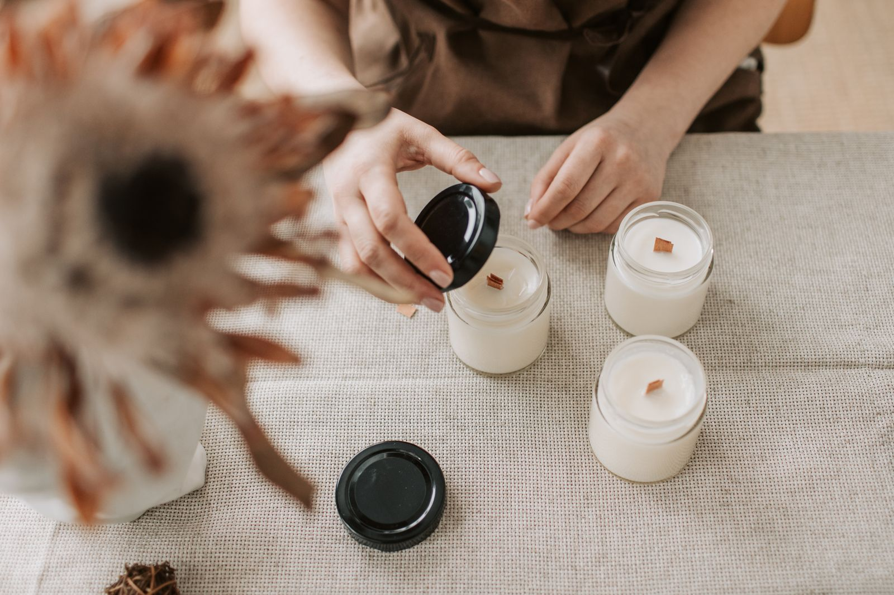
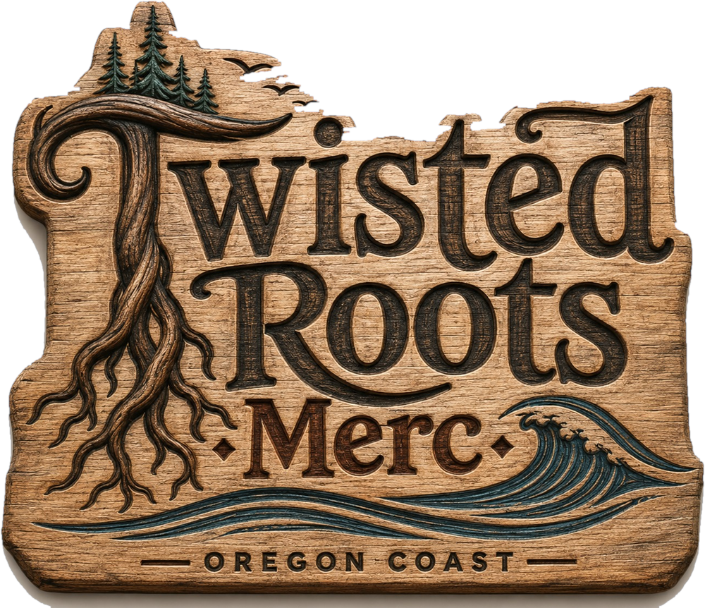

Oregon made · Mostly within an hour of here
Local Goods
Made near here.
Roughly 30% of the store
We keep this shelf small so it stays honest.
Every maker on it is somebody Carrie or Eric has met. No drop-shipped "coastal decor," no gift-shop filler with a state sticker on it. If it's here, someone within about an hour of Siletz made it with their hands.
The people behind the shelf
Our makers

Yaquina Bee Co.
Honey · Siletz Valley
Hives sit in the blackberry and fireweed up the valley, which is why the spring jars run pale and the late-summer ones come out dark as maple. Same bees, different month. We take whatever they've got and it's usually gone before the next batch.

Toledo Clay Works
Stoneware · Toledo
Mugs with a handle you can actually get three fingers through, glazed in the greens and greys that everything out here already is. They come in a dozen at a time and they do not last a dozen days.

Alder & Ash
Candles & soap · Logsden
Beeswax candles that smell like the woods after rain, and soap bars cured in a garage up Logsden Road. The Coastal Fir candle is the one people come back for, usually in November, usually two at a time.
Twisted Roots goods
Wear it, drink out of it, stick it on the truck.
The carved sign out front is the logo, and it looks good on a hat. Stickers are three dollars and honestly we hand most of them out anyway.

Makers, this part is for you
Make something? Bring it in.
If you make it around here and it's good, we want to see it. Walk it through the front door — no submission portal, no line sheet, no wholesale minimum. Carrie will look at it while you stand there and tell you straight either way.